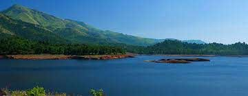
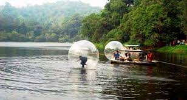

Banasura Sagar DamOne of the most spellbinding places to visit in Wayanad, Banasura Sagar Dam is a picturesque tourist hotspot. Known for being India’s largest earthen dam, it boasts of extensive natural beauty with beautiful flora and fauna, majestic hills and mesmerising waterfalls. The Banasura Sagar is a photographer’s delight and offers the most beautiful views from the top of the hill. It is also famous among adventure enthusiasts who look forward to thrilling activities like boating, trekking, horse racing and camel rides. |
 |
Pookode LakePookode Lake should incite your curiosity. Surrounded by the evergreen beauty of Western Ghats and verdant forests, Pookode Lake is a gorgeous freshwater lake. One of the most interesting features of this lake is that it virtually appears to be in the shape of India’s physical map. Boasting of picturesque excellence and a mesmerising ambience, this freshwater lake is the initiating point of Panamaram stream in Kerala. |
 |